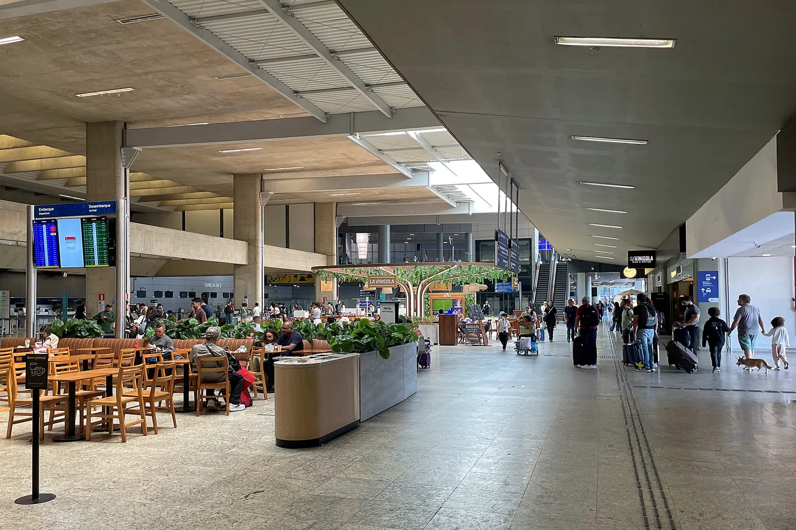
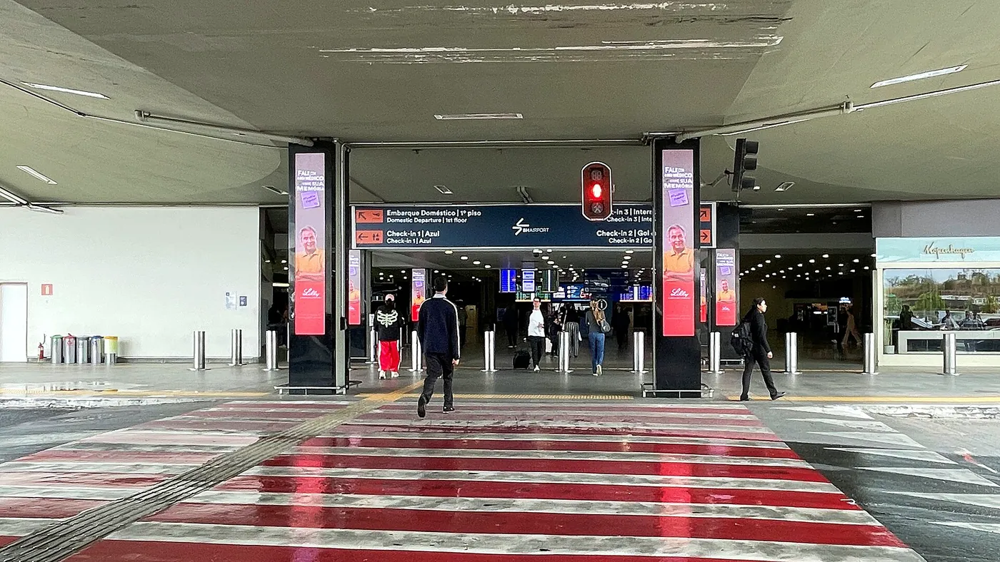
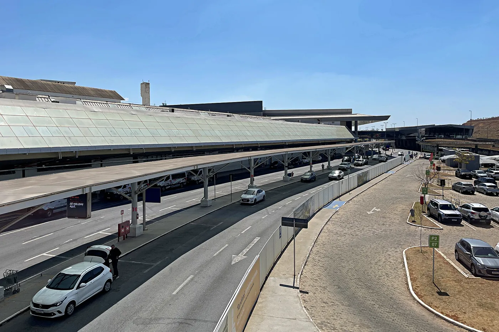
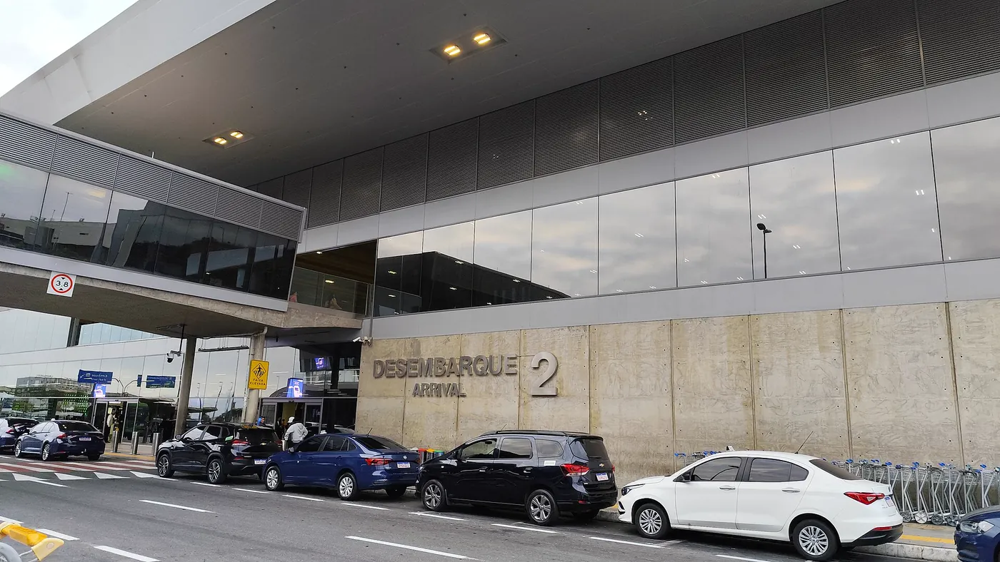
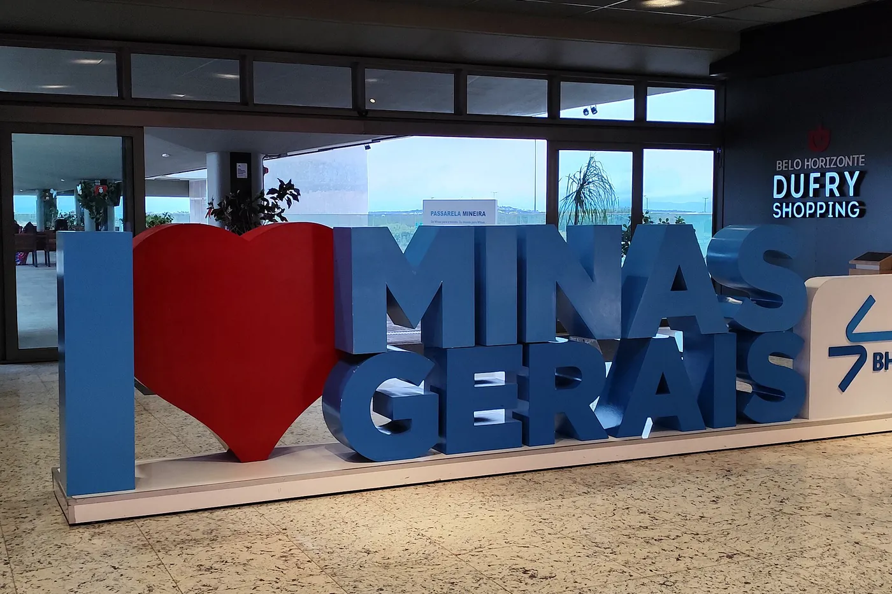
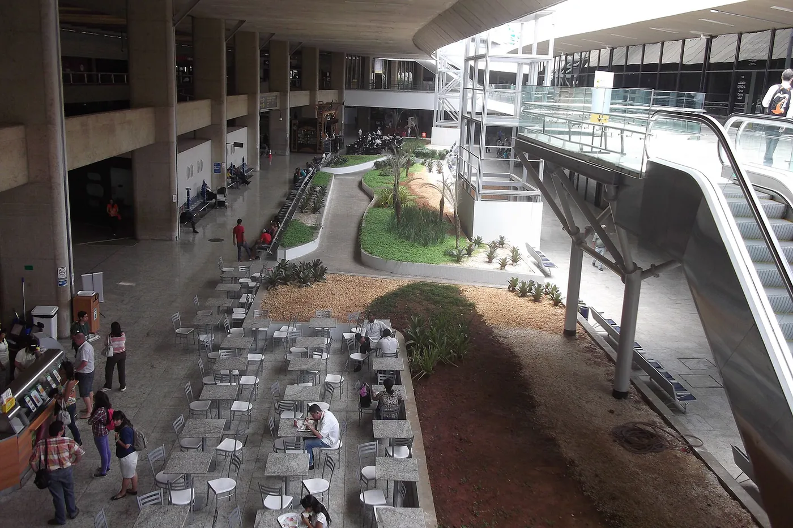

Carro ou transfer
O caminho mais previsível. Sai da porta e para na porta, sem baldeação e sem espera de horário. Para quem vai viajar e deixar o carro, o estacionamento do aeroporto compensa ou não dependendo de quantos dias a viagem tem.
Dois terminais, três pisos cada e 26 pontes de embarque. Entender a lógica do prédio antes de chegar economiza tempo e evita ir ao terminal errado com a mala na mão.
A mudança mais recente do aeroporto, e a que mais confunde quem vai buscar alguém.
Desde 25 de outubro de 2025, o Desembarque 1 do Aeroporto de Confins atende exclusivamente os voos da Azul, e Gol e Latam passaram a desembarcar no Desembarque 2. A sala 1 ficou cerca de três anos fechada para obra e voltou com um layout novo.
Além das esteiras, a sala ganhou novos banheiros, escadas rolantes e área de carrinhos de bagagem. Na prática, o desembarque da Azul deixou de dividir espaço com as outras companhias, o que alivia a fila na esteira em horário de pico.
A mudança foi noticiada pela Panrotas e pelo Hoje em Dia. Distribuição operacional sujeita a alteração pela administradora do aeroporto.
Contamos portão por portão no painel da BH Airport para ver se a regra anunciada se confirma na operação.
No painel oficial da BH Airport consultado em 25 de outubro de 2026, a Azul desembarcou no Píer 1 em cerca de 98 por cento das chegadas com portão publicado, e Gol, Latam e Copa desembarcaram no Píer 2 em 100 por cento delas. Um ano depois da reinauguração, a separação anunciada está valendo na prática.
A amostra veio de uma leitura única do painel, com 267 partidas e 274 chegadas listadas. Dessas, 89 embarques e 173 desembarques já tinham portão publicado no momento da consulta, e são esses que entram nas contas abaixo.
Quem vai buscar alguém só precisa de uma informação: Azul chega no Píer 1 e sai pelo Desembarque 1, o resto chega no Píer 2 e sai pelo Desembarque 2.
| Companhia | Píer 1, portões 101 a 105 | Píer 2, portões 201 a 204 | Chegadas na amostra |
|---|---|---|---|
| Azul | 125 chegadas | 2 chegadas | 127 |
| Azul Conecta | 5 chegadas | nenhuma | 5 |
| Gol | nenhuma | 20 chegadas | 20 |
| Latam | nenhuma | 19 chegadas | 19 |
| Copa | nenhuma | 2 chegadas | 2 |
Dentro do Píer 1, os portões mais usados pela Azul na amostra foram o 101 e o 102, com 32 chegadas cada, seguidos pelo 103 e pelo 104, com 23 cada, e pelo 105, com 15. No Píer 2, a Gol concentrou no portão 202, com 10 chegadas, e a Latam também no 202, com 9.
Aqui a ideia de terminal único não se sustenta. Dos 66 embarques da Azul com portão publicado, 44 saem pelos portões 01 a 16, que ficam no Terminal 1, e 21 saem pelos portões 17 a 30, que ficam no Terminal 2. Isso dá cerca de 67 por cento no Terminal 1 e 32 por cento no Terminal 2, mais um voo isolado no portão 60. Os portões 17 a 30 eram território de Gol e Latam.
Honestidade sobre o dado: isto é uma amostra de uma única leitura do painel oficial da BH Airport, feita em 25 de outubro de 2026, e não uma regra fixa. Portão de embarque muda por aeronave, por atraso e por remanejamento, às vezes no mesmo dia do voo. Use estes números para entender a lógica do aeroporto e sempre confira o seu portão no painel antes de sair de casa. Para acompanhar em tempo real, veja voos em tempo real em Confins.
A lógica é simples e resolve quase toda dúvida de quem nunca foi.
O número do portão resolve: de 01 a 16 é Terminal 1, de 17 em diante é Terminal 2. Não precisa procurar placa nem perguntar, o cartão de embarque já responde.
O Aeroporto Internacional Tancredo Neves, conhecido como Aeroporto de Confins ou BH Airport, usa o código CNF (IATA) e SBCF (ICAO), e fica a cerca de 40 km do centro de Belo Horizonte, no município de Confins.
Ele tem dois terminais de passageiros, com três pisos cada, somando 26 pontes de embarque. Dentro de cada terminal a lógica vertical é constante: desembarque no térreo, embarque no primeiro piso. O desembarque dos dois terminais é separado, então quem vai buscar alguém precisa saber em qual deles a pessoa chega.
Três palavras diferentes aparecem no painel e confundem. Terminal é o prédio, 1 ou 2. Píer é o braço onde a aeronave estaciona na chegada, com portões de três dígitos: 101 a 105 no Píer 1 e 201 a 204 no Píer 2. Sala de desembarque é o saguão onde ficam as esteiras de bagagem e onde quem espera encontra o passageiro, Desembarque 1 ou Desembarque 2.
Quadro geral para se planejar. O detalhe do dia está sempre no painel oficial.
Os dois terminais têm alimentação, lojas e caixa eletrônico, mas a casa de câmbio fica no Terminal 1 e o free shop no Terminal 2. O resto da estrutura é espelhado.
| O que | Terminal 1 | Terminal 2 |
|---|---|---|
| Portões de embarque | 01 a 16 | 17 em diante |
| Píer de chegada ligado | Píer 1, portões 101 a 105 | Píer 2, portões 201 a 204 |
| Sala de desembarque | Desembarque 1, só Azul | Desembarque 2, Gol e Latam |
| Companhia concentrada | Azul | Gol, Latam e internacionais |
| Embarque | Primeiro piso | Primeiro piso |
| Desembarque | Térreo | Térreo, separado do T1 |
| Alimentação e lojas | Sim | Sim |
| Casa de câmbio | Sim | Não |
| Free shop | Não | Sim |
| Alfândega e Polícia Federal | Não | Sim |
| Operação 24 horas | Sim | Sim |
Distribuição geral de companhias e serviços por terminal, sujeita a alteração por obra ou mudança operacional. Confirme o seu terminal e portão no painel oficial da BH Airport no dia do voo. Para ver quem voa de Confins e para onde, veja companhias aéreas e destinos de Confins.
O trajeto é simples. O que varia é quanto tempo ele leva.
São cerca de 40 km do centro de Belo Horizonte até o aeroporto, aproximadamente 45 minutos de carro em trânsito normal e mais de uma hora em horário de pico. O acesso é pela Linha Verde e pela MG-010, sem pedágio.
O caminho mais previsível. Sai da porta e para na porta, sem baldeação e sem espera de horário. Para quem vai viajar e deixar o carro, o estacionamento do aeroporto compensa ou não dependendo de quantos dias a viagem tem.
Sai da região central e da Rodoviária de BH em horários fixos, com intervalo maior de madrugada. É a opção mais barata com conforto aceitável. Os detalhes de linha e ponto estão em Confins e a Rodoviária de BH.
Funciona bem no sentido BH para o aeroporto em horário comercial. O preço oscila por demanda e o cancelamento de corrida longa acontece. Comparativo completo em alternativas de transporte em Confins.
No sentido da ida, com endereço de origem em BH, o roteiro completo está em de BH para o Aeroporto de Confins.
Qual opção resolve o seu caso, sem enrolação.
Saindo da sala de desembarque você tem quatro caminhos: ônibus, aplicativo, táxi credenciado e transfer reservado. Cada um ganha num cenário diferente, e o que mais pesa é a hora em que o seu voo pousa.
Cerca de 40 km até o centro, aproximadamente 45 minutos. Existem linhas de ônibus executivo e convencional, aplicativos e táxi credenciado, cada um resolvendo um caso diferente.
Em horário comercial e com pouca bagagem, o executivo resolve bem.
Ouro Preto, Inhotim, Tiradentes, Diamantina e Serra do Cipó não têm ônibus direto saindo do aeroporto. O caminho público passa pela Rodoviária de Belo Horizonte, o que acrescenta uma baldeação e algumas horas.
Com mala e horário marcado, o transfer direto economiza meio dia.
No horário em que o executivo está com intervalo grande, sobra o convencional, mais lento, e o aplicativo, que fica instável. Veja táxi 24 horas em Confins.
Reserva antecipada é o que mais evita espera nesse horário.
Primeira vez em Confins? O roteiro do que fazer logo depois de sair da aeronave está em chegou em Confins, os primeiros passos.
Fotos reais de Confins para você reconhecer o prédio, entender a divisão dos terminais e combinar onde o carro encosta.






Não achou a sua resposta? Fale com a gente no WhatsApp.
Sim. O Desembarque 1 foi reinaugurado em 25 de outubro de 2025, depois de cerca de três anos de obra, e passou a atender exclusivamente os voos da Azul. A área tem 2 mil metros quadrados e ganhou cinco esteiras de bagagem adicionais, novos banheiros, escadas rolantes e área de carrinhos. A obra custou 15 milhões de reais.
O Desembarque 1 é exclusivo da Azul desde 25 de outubro de 2025. Gol e Latam passaram a desembarcar no Desembarque 2. Voos internacionais seguem o fluxo de chegada internacional, com alfândega e Polícia Federal.
Se você despachou bagagem e saiu por uma sala diferente da do seu voo, pode ter que caminhar até a sala correta para pegar a mala, porque as esteiras são separadas por sala. Quem viajou apenas com bagagem de mão pode sair por qualquer uma das duas sem problema.
Quase sempre no Píer 1, nos portões 101 a 105. Numa amostra do painel oficial da BH Airport consultada em 25 de outubro de 2026, 125 das 127 chegadas da Azul com portão publicado estavam nos portões 101 a 105, cerca de 98 por cento. Portão muda, então confirme no painel no dia do voo.
No Píer 2, nos portões 201 a 204. Na mesma amostra do painel oficial, as 19 chegadas da Latam e as 20 chegadas da Gol com portão publicado estavam todas entre os portões 202 e 204, e as duas chegadas da Copa no portão 201.
A Azul embarca espalhada pelos dois terminais, não só pelo Terminal 1. Na amostra do painel oficial, de 66 embarques da Azul com portão publicado, 44 estavam nos portões 01 a 16, que são do Terminal 1, e 21 estavam nos portões 17 a 30, que são do Terminal 2. Isso dá cerca de 67 por cento no Terminal 1 e 32 por cento no Terminal 2.
Não necessariamente. Você pode desembarcar no Píer 1, ligado ao Terminal 1, e embarcar num portão da faixa 17 a 30, que fica no Terminal 2. O terminal da chegada não é automaticamente o terminal da saída, principalmente em conexão pela Azul. Confira o portão de embarque no painel ou no aplicativo da companhia.
Dois terminais de passageiros, com três pisos cada e 26 pontes de embarque no total. Os portões de 01 a 16 ficam no Terminal 1 e do 17 em diante no Terminal 2.
O número do portão no cartão de embarque já indica: abaixo de 17 é Terminal 1, de 17 para cima é Terminal 2. Como o portão pode mudar até no dia do voo, confirme no painel oficial da BH Airport antes de sair de casa.
O código IATA é CNF e o código ICAO é SBCF. O nome oficial é Aeroporto Internacional Tancredo Neves, e ele também é chamado de BH Airport ou simplesmente Aeroporto de Confins.
Cerca de 40 km do centro de Belo Horizonte, com aproximadamente 45 minutos de carro em trânsito normal. O aeroporto fica no município de Confins, na região metropolitana, com acesso pela Linha Verde e pela MG-010.
Para voo doméstico, duas horas de antecedência resolvem com folga. Para voo internacional, conte três horas. Some a essa conta o tempo de estrada, que é de cerca de 45 minutos saindo do centro de Belo Horizonte e pode passar de uma hora em horário de pico.
O free shop fica no Terminal 2 e a casa de câmbio no Terminal 1. Os dois terminais têm alimentação, lojas e caixas eletrônicos. A composição de lojas muda com o tempo, então confirme no site oficial do aeroporto.
Sim, a operação do aeroporto é 24 horas, com voos de madrugada chegando e saindo. O que não funciona a noite toda é o entorno: parte das lojas fecha, o ônibus executivo tem intervalo maior e o aplicativo fica instável. Nesse horário, transporte reservado antes do embarque é o que mais evita espera.
Tudo sobre o aeroporto e o transporte em volta dele, reunido.
Motorista aguardando no desembarque, acompanhando o número do seu voo.
Somos táxi credenciado no Aeroporto de Confins e atendemos 24 horas, inclusive em voo de madrugada e em voo atrasado. Mande o número do voo e o destino, e devolvemos o valor fechado.